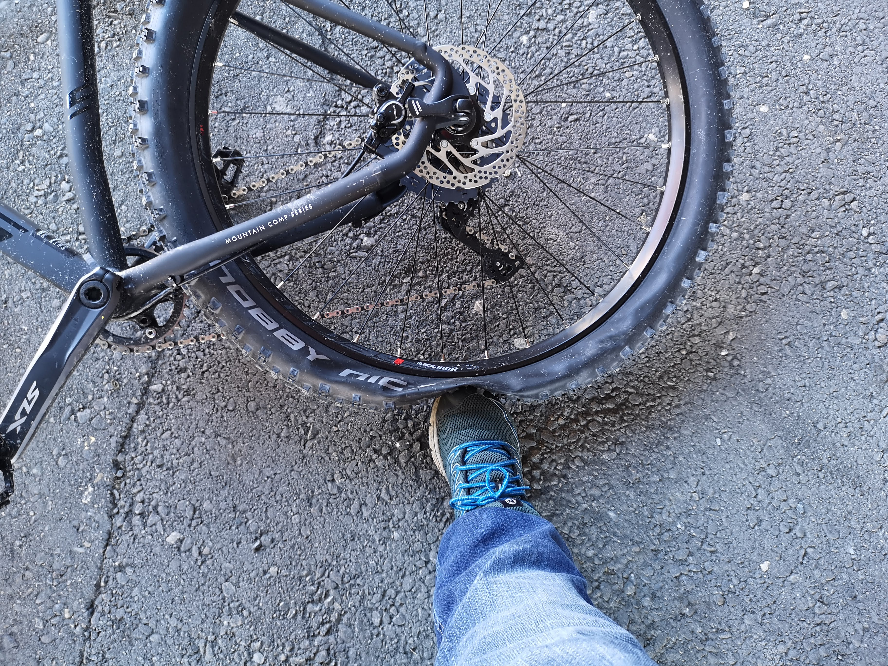
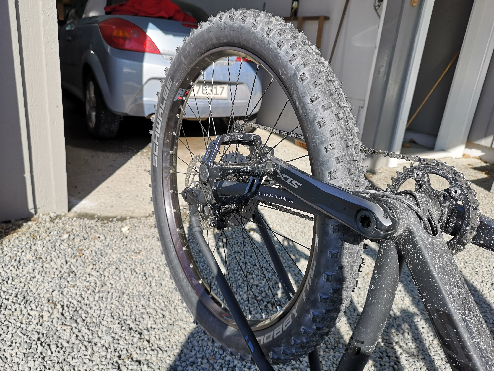

How-to
1. Realize in despair your tyre is flat and you didn't bring a patch kit or a pump.

2. Wheel the bike all the way home while partly carrying it so you don't cause any more damage to the tyre, rim or inner tube.
3. Get the whell unmounted and tyre off to find the cause of the leak.
4. The leak was caused by a bloody rock shaped like a nail!
5. Look at the instructions in your patch kit.
6. Find the leak and follow the instructions in your patch kit.
If you can't find the leak, pump the inner tube up and place it underwater so you see bubbles rising up. At the source of the bubbles is where your hole will be.
7. Get that thing patched.
8. Remount the inner tube in the tyre on the rim on the bike.

9. Admire your handiwork.